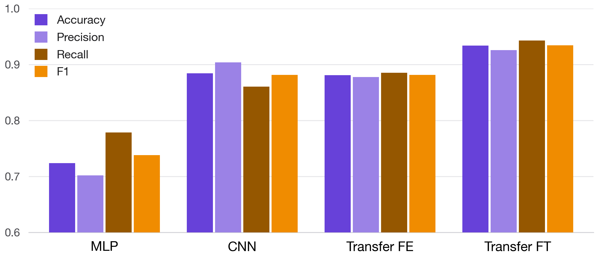
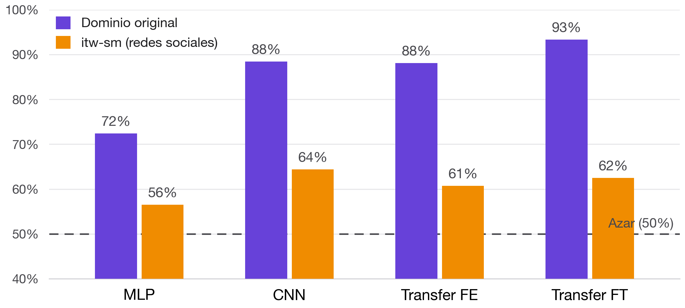
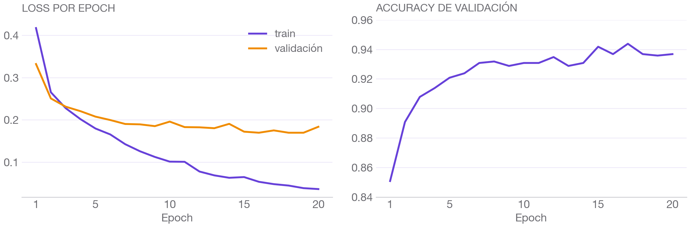
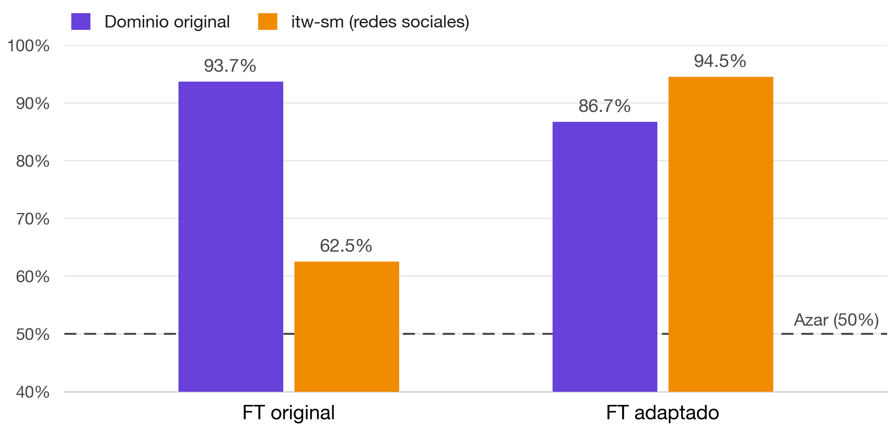

1Motivación y datos
Los generadores de imágenes (Stable Diffusion, DALL-E, Midjourney) son cada vez más fotorrealistas, con impacto directo sobre la desinformación. Tarea: clasificación binaria de una imagen RGB (224×224): ¿real o generada por IA?
- Dominio original (Kaggle): 60.000 imágenes balanceadas de paisajes, naturaleza y arte. Partición 80/10/10.
- Dominio nuevo (itw-sm): 10.000 imágenes de Facebook, X, Instagram y LinkedIn.
- Extensión: un detector con 93% de accuracy se vuelve inutilizable frente a fotos cotidianas, y lo recuperamos con domain adaptation.


2Metodología
Entrenados con BCEWithLogitsLoss, Adam y early stopping sobre la loss de validación.
MLP + PCA
321 componentes (90% de varianza). Baseline.
CNN
4 bloques conv (32→256 filtros), 26M parámetros.
ResNet50 FE
Backbone congelado, solo 2.049 parámetros entrenables.
ResNet50 FT
Se descongela layer4 (~15M), LR 10-4.
FT incremental
Continúa FT sobre itw-sm con LR 10-5 para mitigar el catastrophic forgetting.
3Resultados en el dominio original
| Modelo | Accuracy | F1 |
|---|---|---|
| MLP + PCA | 0.724 | 0.738 |
| CNN | 0.884 | 0.882 |
| ResNet50 FE | 0.881 | 0.881 |
| ResNet50 FT | 0.934 | 0.934 |
La estructura espacial importa (MLP muy por debajo) y los features de ImageNet dominan: fine-tuning alcanza 93.4% (AUC = 0.986).

4Domain shift
Una selfie real es clasificada como generada por IA por tres de los cuatro modelos:


no es de la arquitectura sino del dominio de entrenamiento.
5Domain adaptation
Partiendo del modelo FT, se continúa el entrenamiento sobre itw-sm con learning rate 10-5: el modelo incorpora el dominio nuevo modificando mínimamente sus pesos.


6Conclusiones, demo y trabajo futuro
El transfer learning domina: adaptar solo layer4 de ResNet50 supera a una CNN entrenada desde cero con 48.000 imágenes.
El dominio importa tanto como la arquitectura: los cuatro modelos colapsan al azar fuera de distribución.
Adaptar es barato: un fine-tuning incremental con LR reducido gana 32 puntos perdiendo solo 7 en el original.
Trabajo futuro: reentrenar con las imágenes subidas a la demo · arquitecturas modernas (ViT, ConvNeXt) · generadores más recientes.
Probá el modelo con tus propias fotos →
web-ai-image-detection